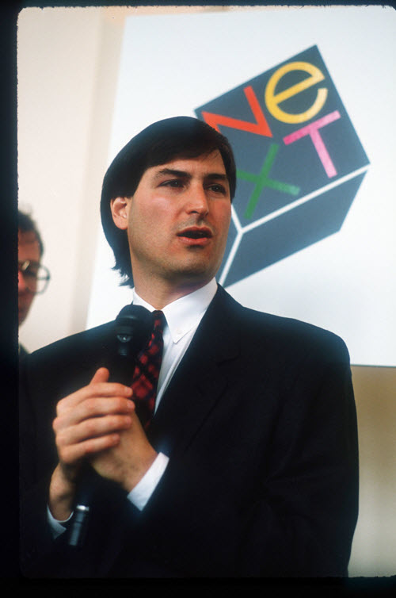

Apple inc ©
Pre-foundation
Steve Jobs and Steve Wozniak had withdrawn from Reed College and UC Berkeley respectively by 1975. Wozniak designed a video terminal that he could use to log on to the minicomputers at Call Computer. Alex Kamradt commissioned the design and sold a small number of them through his firm. Aside from their interest in up-to-date technology, the impetus for Jobs and Wozniak, also referred to collectively as "the two Steves", seems to have had another source. In his essay From Satori to Silicon Valley (published 1986), cultural historian Theodore Roszak made the point that the Apple Computer emerged from within the West Coast counterculture and the need to produce print-outs, letter labels, and databases. Roszak offers a bit of background on the development of the two Steves' prototype models.
In 1975, Wozniak started attending meetings of the Homebrew Computer Club. New microcomputers such as the Altair 8800 and the IMSAI inspired him to build a microprocessor into his video terminal and have a complete computer.
At the time the only microcomputer CPUs generally available were the $179 Intel 8080 (equivalent to $814 in 2017), and the $170 Motorola 6800 (equivalent to $773 in 2017). Wozniak preferred the 6800, but both were out of his price range. So he watched, and learned, and designed computers on paper, waiting for the day he could afford a CPU.
When MOS Technology released its $20 (equivalent to $86 in 2017) 6502 chip in 1976, Wozniak wrote a version of BASIC for it, then began to design a computer for it to run on. The 6502 was designed by the same people who designed the 6800, as many in Silicon Valley left employers to form their own companies. Wozniak's earlier 6800 paper-computer needed only minor changes to run on the new chip.
Wozniak completed the machine and took it to Homebrew Computer Club meetings to show it off. At the meeting, Wozniak met his old friend Jobs, who was interested in the commercial potential of the small hobby machines.

Apple I and company formation
The two Steves had been friends for some time, having met in 1971, when their mutual friend, Bill Fernandez, introduced then 21-year-old Wozniak to 16-year-old Jobs. They began their partnership when Wozniak, a talented, self-educated electronics engineer, began constructing boxes which enabled one to make long-distance phone calls at no cost, and sold several hundred models.[11] Later, Jobs managed to interest Wozniak in assembling a computer machine and selling it.
Jobs approached a local computer store, The Byte Shop, who said they would be interested in the machine, but only if it came fully assembled. The owner, Paul Terrell, went further, saying he would order 50 of the machines and pay US $500 each on delivery (equivalent to $2,200 in 2017). Jobs then took the purchase order that he had been given from the Byte Shop to Cramer Electronics, a national electronic parts distributor, and ordered the components he needed to assemble the Apple I Computer. The local credit manager asked Jobs how he was going to pay for the parts and he replied, "I have this purchase order from the Byte Shop chain of computer stores for 50 of my computers and the payment terms are COD. If you give me the parts on a net 30-day terms I can build and deliver the computers in that time frame, collect my money from Terrell at the Byte Shop and pay you."
The credit manager called Paul Terrell, who was attending an IEEE computer conference at Asilomar in Pacific Grove, and verified the validity of the purchase order. Amazed at the tenacity of Jobs, Terrell assured the credit manager if the computers showed up in his stores, Jobs would be paid and would have more than enough money to pay for the parts order. The two Steves and their small crew spent day and night building and testing the computers, and delivered to Terrell on time to pay his suppliers and have a tidy profit left over for their celebration and next order. Steve Jobs had found a way to finance his soon-to-be multimillion-dollar company without giving away one share of stock or ownership.
The machine had only a few notable features. One was the use of a TV as the display system, whereas many machines had no display at all. This was not like the displays of later machines, however; text was displayed at 60 characters per second. However, this was still faster than the teleprinters used on contemporary machines of that era. The Apple I also included bootstrap code on ROM, which made it easier to start up. Finally, at the insistence of Paul Terrell, Wozniak also designed a cassette interface for loading and saving programs, at the then-rapid pace of 1200 bit/s. Although the machine was fairly simple, it was nevertheless a masterpiece of design, using far fewer parts than anything in its class, and quickly earning Wozniak a reputation as a master designer.
Joined by another friend, Ronald Wayne, the two Steves started building the machines. Using a variety of methods, including borrowing space from friends and family, selling various prized items (like Wozniak's HP scientific calculator and Jobs' VW bus) and scrounging, Jobs managed to secure the parts needed while Wozniak and Wayne assembled them. Building such a machine was going to be financially burdensome, and the owner of the Byte Shop was expecting complete computers, not just printed circuit boards. The boards being a product for the customers, Terrell still paid them. Jobs started looking for cash, but banks were reluctant to lend him money; the idea of a computer for ordinary people seemed absurd at the time. Jobs eventually met Mike Markkula who co-signed a bank loan for $250,000 (equivalent to $1,080,000 in 2017), and Jobs, Wozniak and Wayne formed Apple Computer on April 1, 1976. Wayne was somewhat gun-shy due to a failed venture four years earlier and soon dropped out of the company, leaving the two Steves as the active primary co-founders. The name Apple was chosen because the company to beat in the technology industry at the time was Atari, and Apple Computer came before Atari alphabetically and thus also in the phone book. Another reason was that Jobs had happy memories of working on an Oregon apple farm one summer. Eventually, 200 of the Apple I's were built.
Apple II
Wozniak had soon moved on from the Apple I. Many of the design features of the I were due to the limited amount of money they had to construct the prototype, but with the income from the sales Wozniak was able to start construction of a greatly improved machine, the Apple II; the two Steves presented it to the public at the first West Coast Computer Faire on April 16 and 17, 1977. On the first day of the exhibition, Jobs introduced the Apple II to a Japanese chemist named Toshio Mizushima, who became the first authorized Apple dealer in Japan.
The main difference internally was a completely redesigned TV interface, which held the display in memory. Now not only useful for simple text display, the Apple II included graphics and, eventually, color. Jobs meanwhile pressed for a much improved case and keyboard, with the idea that the machine should be complete and ready to run out of the box. This was almost the case for the Apple I machines sold to The Byte Shop, but one still needed to plug various parts together and type in the code to run BASIC.
With both cash and a new case design in hand thanks to designer Jerry Manock, the Apple II was released in 1977 and was one of the three "1977 Trinity" computers generally credited with creating the home computer market (the other two being the Commodore PET and the Tandy Corporation TRS-80). Millions were sold well into the 1980s. A number of different models of the Apple II series were built, including the Apple IIe and Apple IIGS, which continued in public use for nearly two decades thereafter.
Apple III
While the Apple II was already established as a successful business-ready platform because of Visicalc, Apple was not content. The Apple III was designed to take on the business environment. The Apple III was released on May 19, 1980.
The Apple III was a relatively conservative design for computers of the era. However, Steve Jobs did not want the computer to have a fan; rather, he wanted the heat generated by the electronics to be dissipated through the chassis of the machine, forgoing the cooling fan.
However, the physical design of the case was not sufficient to cool the components inside it. By removing the fan from the design, the Apple III was prone to overheating. This caused the integrated circuit chips to disconnect from the motherboard. Customers who contacted Apple customer service were told to "raise the computers six inches in the air, and then let go", which would cause the ICs to fall back into place.
Thousands of Apple III computers were recalled. A new model was introduced in 1983 to try and rectify the problems, but the damage was already done.
1985: Jobs leaves Apple
Sculley and Jobs' visions for the company greatly differed. The former favored open architecture computers like the Apple II, sold to education, small business, and home markets less vulnerable to IBM. Jobs wanted the company to focus on the closed architecture Macintosh as a business alternative to the IBM PC. President and CEO Sculley had little control over Chairman of the Board Jobs' Macintosh division; it and the Apple II division operated like separate companies, duplicating services. Although its products provided 85% of Apple's sales in early 1985, the company's January 1985 annual meeting did not mention the Apple II division or employees. Many left, including Wozniak, who stated that the company had "been going in the wrong direction for the last five years" and sold most of his stock.
The Macintosh's failure to defeat the PC strengthened Sculley's position in the company. In June 1985, the board of directors sided with Sculley and Jobs was stripped of all duties. Jobs, while taking the position of Chairman of the firm, had no influence over Apple's direction and subsequently resigned. Sculley reorganized the company, unifying sales and marketing in one division and product operations and development in another. In a show of defiance at being set aside by Apple Computer, Jobs sold all but one of his 6.5 million shares in the company for $70 million. Jobs then acquired the visual effects house, Pixar for $5M (equivalent to $11,200,000 in 2017). He also went on to found NeXT Inc., a computer company that built machines with futuristic designs and ran the UNIX-derived NeXTstep operating system. NeXTSTEP would eventually be developed into Mac OS X. While not a commercial success, due in part to its high price, the NeXT computer would introduce important concepts to the history of the personal computer (including serving as the initial platform for Tim Berners-Lee as he was developing the World Wide Web).
Steve Jobs's comeback
On July 9, 1997, Gil Amelio was ousted as CEO of Apple by the board of directors. Jobs stepped in as the interim CEO to begin a critical restructuring of the company's product line. He would eventually become CEO and served in that position until August 2011. On August 24, 2011 Steve Jobs resigned his position as chief executive officer of Apple before his long battle with pancreatic cancer took his life on October 5, 2011.
On November 10, 1997, Apple introduced the Apple Store, an online retail store based upon the WebObjects application server the company had acquired in its purchase of NeXT. The new direct sales outlet was also tied to a new build-to-order manufacturing strategy.
2007–2011: Apple Inc., iPhone, iOS, iPad
On January 9, 2007, Apple Computer, Inc. shortened its name to simply Apple Inc. In his Macworld Expo keynote address, Steve Jobs explained that with their current product mix consisting of the iPod and Apple TV as well as their Macintosh brand, Apple really wasn't just a computer company anymore. At the same address, Jobs revealed a product that would revolutionize an industry in which Apple had never previously competed: the Apple iPhone. The iPhone combined Apple's first widescreen iPod with the world's first mobile device boasting visual voicemail, and an internet communicator able to run a fully functional version of Apple's web browser, Safari, on the then-named iPhone OS (later renamed iOS).
IOS Evolution
The first version of the iPhone became publicly available on June 29, 2007 in selected countries/markets. It was another 12 months before the iPhone 3G became available on July 11, 2008. Apple announced the iPhone 3GS on June 8, 2009, along with plans to release it later in June, July, and August, starting with the U.S., Canada and major European countries on June 19. This 12-month iteration cycle has continued with the iPhone 4 model arriving in similar fashion in 2010, a Verizon model was released in February 2011, and a Sprint model in October 2011, shortly after Jobs' death.
On February 10, 2011, the iPhone 4 was made available on both Verizon Wireless and AT&T. Now two iPod types are multi-touch: the iPod nano and the iPod touch, a big advance in technology. Apple TV currently has a 2nd generation model, which is 4 times smaller than the original Apple TV. Apple has also gone wireless, selling a wireless trackpad, keyboard, mouse, and external hard drive. Wired accessories are, however, still available.
The Apple iPad was announced on January 27, 2010 with retail availability commencing in April and systematically growing in markets throughout 2010. The iPad fits into Apple's iOS product line, being twice the screen size of an iPhone without the phone abilities. While there were initial fears of product cannibalisation the FY2010 financial results released in Jan 2011 included commentary of a reverse 'halo' effect, where iPad sales were leading to increased sales of iMacs and MacBooks.